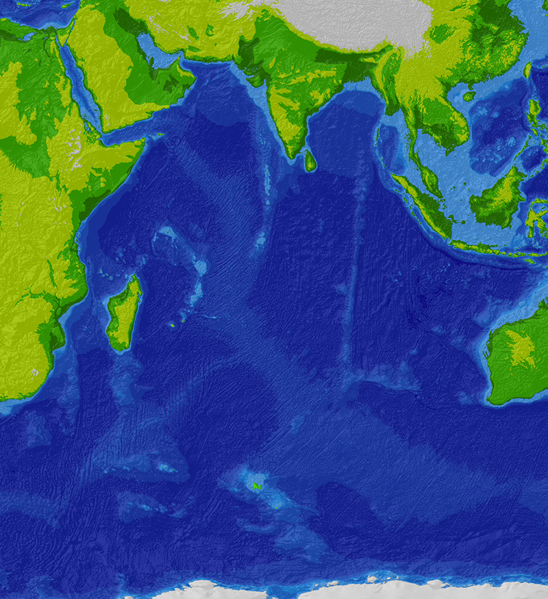

From Wikipedia, the free encyclopedia
The Indian Ocean is the third largest of the world's oceanic divisions, covering 70,560,000 km2 (27,240,000 sq mi) (approximately 20% of the water on the Earth's surface).[3] It is bounded by Asia on the north, on the west by Africa, on the east by Australia, and on the south by the Southern Ocean or, depending on definition, by Antarctica.
Indian Ocean

Extent of the Indian Ocean according to The World Factbook

The ocean-floor of the Indian Ocean is divided by spreading ridges and crisscrossed by aseismic structures
Indian Ocean
Contents
For the rock and, see Indian Ocean (band).
Contents [hide]
- Etymology
- Geography
Marginal seas
- Climate
- Oceanography
- Geology
- Marine life
- History
First settlements
Age of Discovery
Modern era
- Trade
- See also
- References
- Sources
- External links
Etymology
The Indian Ocean is named after India.[5][6] Called the Sindhu Mahasagara or the great sea of the Sindhu by the Ancient Indians, this ocean has been variously called Hindu Ocean, Indic Ocean, etc. in various languages. The Indian Ocean was also known earlier as the Eastern Ocean.[5] The term was still in use during the mid-18th century.
Geography
The borders of the Indian Ocean, as delineated by the International Hydrographic Organization in 1953 included the Southern Ocean but not the marginal seas along the northern rim, but in 2000 the IHO delimited the Southern Ocean separately, which removed waters south of 60°S from the Indian Ocean, but included the northern marginal seas.[7][8] Meridionally, the Indian Ocean is delimited from the Atlantic Ocean by the 20° east meridian, running south from Cape Agulhas, and from the Pacific Ocean by the meridian of 146°49'E, running south from the southernmost point of Tasmania. The northernmost extent of the Indian Ocean (including marginal seas) is approximately 30° north in the Persian Gulf.[8]
The Indian Ocean covers 70,560,000 km2 (27,240,000 sq mi), including the Red Sea and the Persian Gulf but excluding the Southern Ocean, or 19.5% of the world's oceans; its volume is 264,000,000 km3 (63,000,000 cu mi) or 19.8% of the world's oceans' volume; it has an average depth of 3,741 m (12,274 ft) and a maximum depth of 7,906 m (25,938 ft).[9]
The ocean's continental shelves are narrow, averaging 200 kilometres (120 mi) in width. An exception is found off Australia's western coast, where the shelf width exceeds 1,000 kilometres (620 mi). The average depth of the ocean is 3,890 m (12,762 ft). Its deepest point is Sunda Trench at a depth of 7,450 m (24,442 ft); Diamantina Deep has a depth of 7,079 m (23,225 ft). North of 50° south latitude, 86% of the main basin is covered by pelagic sediments, of which more than half is globigerina ooze. The remaining 14% is layered with terrigenous sediments. Glacial outwash dominates the extreme southern latitudes.[1]
The major choke points include Bab el Mandeb, Strait of Hormuz, the Lombok Strait, the Strait of Malacca and the Palk Strait. Seas include the Gulf of Aden, Andaman Sea, Arabian Sea, Bay of Bengal, Great Australian Bight, Laccadive Sea, Gulf of Mannar, Mozambique Channel, Gulf of Oman, Persian Gulf, Red Sea and other tributary water bodies. The Indian Ocean is artificially connected to the Mediterranean Sea through the Suez Canal, which is accessible via the Red Sea. All of the Indian Ocean is in the Eastern Hemisphere and the centre of the Eastern Hemisphere, the 90th meridian east, passes through the Ninety East Ridge.
Marginal seas
Marginal seas, gulfs, bays and straits of the Indian Ocean include:[8]
- Andaman Sea
- Arabian Sea
- Bay of Bengal
- Great Australian Bight
- Gulf of Mannar
- Gulf of Aden
- Gulf of Aqaba
- Gulf of Tadjoura
- Gulf of Bahrain
- Gulf of Carpentaria
- Gulf of Kutch
- Gulf of Khambat
const opts = Object.assign(default0pts, user0pts);